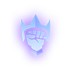
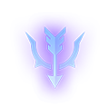

Tank
Tanks are formidable giants that protect their team by absorbing enemy attacks and slowing their advance.

Bruiser
Aggressors are tough fighters capable of also dishing out a moderate amount of damage.
Support
Support heroes primarily provide buffs and other benefits to their allies.
Healers
Healers focus primarily on healing their allies and mitigating damage.
Melee Assassin
Melee Assassins are offensive heroes that deal high damage and do so by getting very close to their targets.

Ranged Assassin
Ranged Assassins are fragile heroes with the ability to deal massive damage from afar.